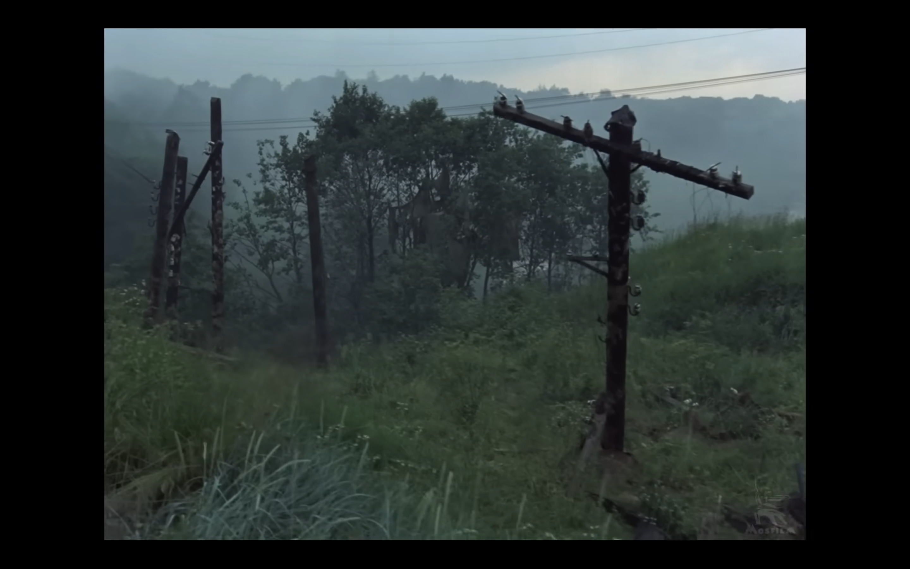
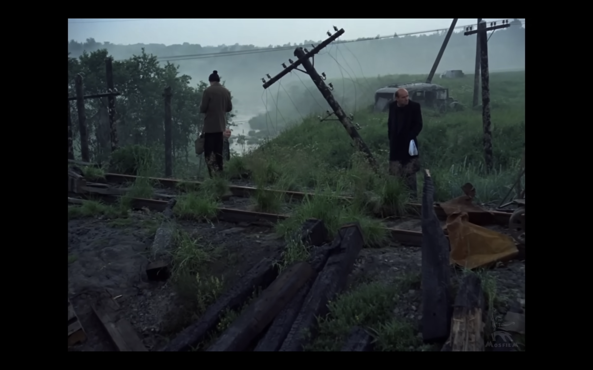
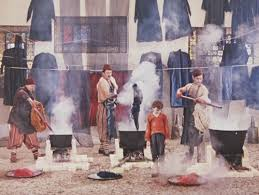
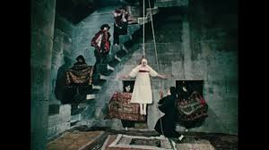

The Stalker (1979) by Andrei Tarkovsky
The Movie and it's OST Meditation by Edward Artemiev are the main inspiration of this album. Specifically, the sample is the Meat Grinder / Mincer scene, the sample is repeated throughout most of the album.



The Colour of Pomegranates (1969) by Sergei Parajanov
The scene of the poet on the roof with books.


Storm
Walking around UC Merced
| Title |
Section |
Chords |
Comments |
| Saudade Wounds |
Verse 1 0:00 |
Bflat7 #11, F m7/13, Bflat maj7/9, C maj7/13 |
Bass improvised, intro chord is B dim / G? its a G 7 chord where I tritone sub but more like tritone add. |
| Mamihlapinatapai Wounds |
Main Melody 2:20 |
In Dflat Major |
Burzum Inspired |
| Sehnsucht Wounds |
Ambient Guitar Solo 1 3:28 |
In C major and F major |
All improvised, made a mistake I should be going between C major and F# major |
| Saudade Wounds 6:48 |
| Mamihlapinatapai Wounds 9:09 |
| Komorebi Wounds |
Ambient Section 10:16 |
Bflat7 #11, F m7/13, Bflat maj7/9, C maj7/13 |
My favorite section |
| Mamihlapinatapai Wounds 12:21 |
| Aflat 7/9/#11 13:25 |
| Eleftheromania Wounds |
Verse 2 13:25 |
Dflat major7/flat9, D dim 7, Aflat major7/#11 / E, C major 7/13 |
I like this chord progression alot, melody improvised |
| Mamihlapinatapai Wounds 17:57 |
| Komorebi Wounds 19:04 |
| Mamihlapinatapai Wounds 21:09 |
| Meraki Wounds |
Storm Section + solos + Noise 22:13 |
Improvisations in C major and F# major |
Noise made with Logic PedalBoard, Three improvised solos. |
| Saudade Wounds 29:13 |
| Kalopsia Wounds |
Ambient Guitar Solo 2 34:28 |
C major 7, Bbmaj11 sus(b2), A minor, Bbmaj11 sus(b2), D minor 7 / C, Bbmaj11 sus(b2), G6, Improv In D minor, same Chords as before then end, B 7, E minor |
The chord progression started with a secondary dominant thing of E 7 to A minor and I was trying to tritone sub, and then I messed up when I tried to make a Bb 7 # 11 chord, but it sounded crunchy and I kept it anyways. Then did the same secondary dominant to tritone sub thing again from C 7 to F major. D7 to G major and I need more practice with chords but it sounds cool. The B 7 to E minor is from Paul Simons 50 Ways to Leave Your Lover |